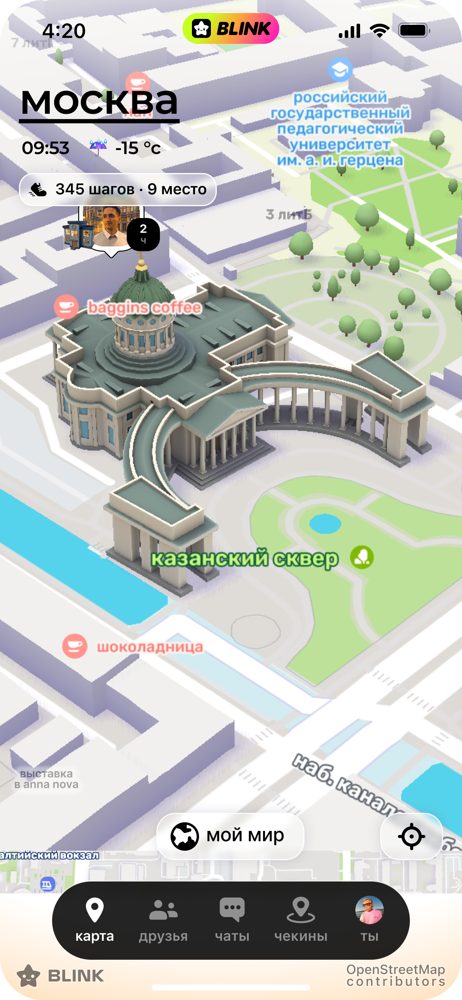
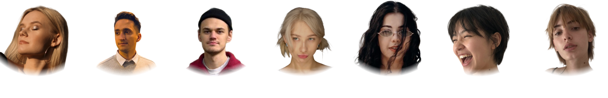

это величественное здание в стиле ампир напоминает орла, распахнувшего крылья: от центрального купола в обе стороны расходятся полукруглые колоннады

подойдите к месту вдвоём с другом и сделайте совместный трях — свободное место станет вашим.
чужое место тоже можно забрать: соберитесь компанией больше, чем у владельцев. сейчас их восемь, так что вас должно быть девять.